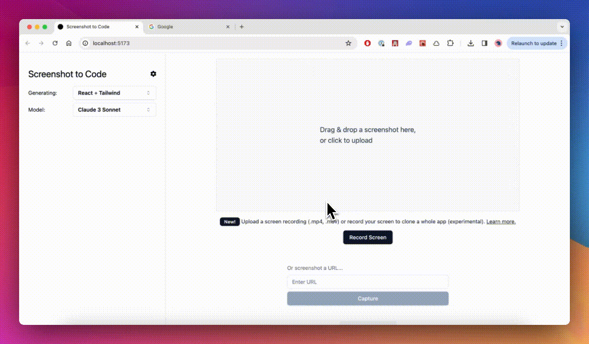

GitHub Repo / AI UI / 原型生成 / 技术分享
screenshot-to-code：把截图、线框图和录屏变成可运行代码的 AI 工具
这不是“自动写代码”的噱头工具，而是一条完整的 UI 落地链路：输入截图、mockup、Figma 或 screen recording，输出清洁的 HTML、React、Vue、Bootstrap 或 Ionic 代码，并支持本地自托管或官方托管版本。
一句话定位
它的价值不是替你造一个“差不多像”的页面，而是把设计稿快速转成可继续迭代的前端骨架，让原型、验证和落地之间的距离更短。

核心概念：它到底在解决什么
core idea
先给结论
它把“看图写页面”这件事产品化了：从视觉输入到前端代码，中间不是靠手工重画，而是靠 AI 生成一个可编辑、可运行、可继续迭代的代码起点。
截图 → 代码
mockup / Figma / 录屏
可继续迭代
核心能力：为什么它值得看
capabilities
输入截图 / 线框图 / Figma / 录屏
输出HTML / CSS / React / Vue 等
部署方式本地自托管 / 官方托管
模型策略多模型可对比
它能做的事
- 把设计稿快速转成前端骨架，缩短从“图”到“可运行页面”的时间。
- 支持多种技术栈，适合不同团队的落地方式。
- 既可用官方托管版快速试，也可本地搭建后深度定制。
- 允许多模型并行比较，方便看不同模型的生成质量差异。
技术特征
README 里明确把它定位成 React/Vite 前端 + FastAPI 后端的组合，并提供 Docker 方案。也就是说，它不是单纯的 demo，而是一个能进研发流程的应用型工具。
前后端分离
Docker 可跑
可自托管
使用场景：什么时候最适合上
use cases
1
快速验证 UI 方案
当你只有一张设计图或一个概念稿，想先看“做出来大概是什么样”时，它能先给你一版可运行页面。
2
把设计交给工程前的过桥工具
它适合做“设计 → 代码”的中间层，减少工程师从零还原视觉结构的时间。
3
做多方案对比
因为支持多模型，你可以观察不同模型对同一截图的重建效果，选出更适合你团队的生成策略。
4
自托管团队工作流
如果团队需要私有化、调参或接入内部 API，可以直接走本地运行和 Docker 路线，而不是只依赖官方托管版。
注意事项：别把它当成万能自动化
limits
使用门槛
- 本地运行需要 API Key，至少准备 OpenAI、Anthropic 或 Gemini 之一。
- 需要前端和后端一起跑，适合愿意折腾环境的人。
- 如果你要长时间开发，Docker 方案更像“快速启动”，不适合深度开发流程。
边界
- 它是原型与转写工具，不是把设计自动变成最终产品的完全替代品。
- README 也明确提醒：开源模型（如 Ollama）可用但质量通常不理想。
- 复杂交互、业务逻辑、工程约束，仍然需要人工补全和校验。
资源链接与上手路径
resources
推荐顺序
- 先试官方托管版：screenshottocode.com，最快感受效果。
- 再看 README 的本地启动：前端 Yarn + 后端 Poetry / Uvicorn。
- 最后再决定是否用 Docker 方式封装到团队环境里。
来源：GitHub 仓库 abi/screenshot-to-code｜README 关键信息：支持截图/Mockup/Figma/录屏 → HTML/CSS/React/Vue/Bootstrap/Ionic；官方托管版可直接试用；本地可通过 React/Vite + FastAPI 或 Docker 运行。
一句话总结
它最适合被当成“UI 原型加速器”：先把视觉想法变成可跑页面，再把工程时间留给真正值钱的部分。
适合谁
适合产品、设计、前端和 AI 工具爱好者；尤其适合需要快速把截图或设计稿转成可继续迭代代码的人。